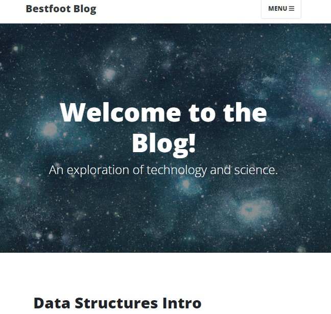
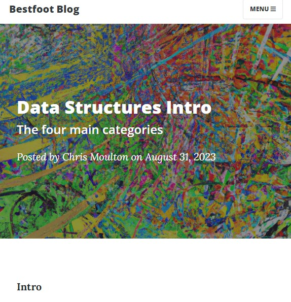

My blog:
Built partly in a Python bootcamp, I've made this my own by writing a growing number of CS and programming related articles.
Consistantly undergoing changes, it is my experimentation site built in a full-stack:
Python, Flask, Jinja, CSS, HTML, JS and SQLite/PostgreSQL
Data Structure Notebook and Blog:
My first deep dive into the DSA part of my journey. It was a fun and challenging project. In it I write about the functions and usecases of the 4 main categories of data-structures.
It has an accompanying .ipynb file for hands-on study; all linked in the blog post.
With this portfolio built, I'm excited to have another place to share my work. Stay tuned as I work on the next project! I'm thinking something with a couple NASA apis and Python pandas.